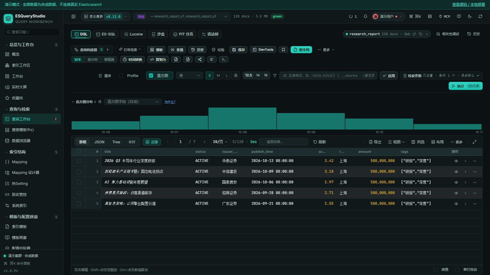

POST /esmcp
标准 HTTP JSON-RPC，多集群与配额治理；ADMIN 控制系统管理工具。
Authorization: Bearer esq_mcp_…
为 Spring Boot 而生的 Elasticsearch 查询工作台。DSL、SQL、Lucene、沙盒、PIT 与语法桥共享同一份查询上下文；Mapping、analyzer 与版本感知参与补全、lint 和执行前检查。
Elasticsearch 6.7 → 9.xSpring Boot 控制台Apache-2.0
合成数据演示 · 不连接真实 Elasticsearch · Apache-2.0
{
"query": {
"bool": {
"must": [
{ "term": { "status": "paid" } },
{ "range": { "amount": { "gte": 100 } } }
]
}
},
"sort": [{ "paid_at": "desc" }],
"size": 20
}查询工作台、独立 jar 与 Chrome 扩展浏览器模式跑在 6 / 7 / 8 / 9 四个大版本上：请求形态、SQL 端点、模板与 mapping type 由集群 version.number 驱动。版本未知时也不猜 major，直接走 6.x 与 7.x+ 都合法的双兼容形态。
_xpack/sql、legacy _template 回退；低版本能力按 minVer 标注。
_sql、7.8+ composable template、7.9+ data streams。
bitmap_terms）直接可用，不需要换一套 UI。
表里是 ES 的行为差异，不是两套代码分支。宿主适配器用同一条现代请求路径 + 通用回退（如 _sql → _xpack/sql）覆盖 6.7–9.x；hits.total 同时接受数字与对象。
宿主形态：Boot 2.3 / 2.7 / 3.5 / 4.2 宿主共用同一个 boot-support 自动装配核心（2.3 走 spring.factories，Java 8 / Spring 5.2 实测）；不保留 6.x/7.x 代码分支，也不发布 2.3 专属产物。适配器覆盖健康 / 搜索 / SQL / 只读概览与查询工作台、文档/索引写面（默认关闭）、页面契约与宿主认证 SPI；MCP 由完整控制台与 Boot 2.3–4.2 宿主形态共同提供（同一 17 组 /esmcp，宿主用服务 token）。
查询工作台是主角。条件树与原始 JSON 双向同步，切换 SQL、Lucene 或 PIT 时，结果、直方图、历史与草稿都不离开现场。

同一组工具契约，三种 transport 对齐：17 个 action 组 / 171 个 action，14 个只读资源 + 1 个 MCP App，7 个引导提示词。key 按登录人与角色签发，连接级 read/write，调用留档到 IP、UA 与 requestId。
标准 HTTP JSON-RPC，多集群与配额治理；ADMIN 控制系统管理工具。
Authorization: Bearer esq_mcp_…
页面内 AI / Agent 零端口调用；写工具默认关闭，边界如实展示。
await ESQueryStudioMCP.callTool(…)
本机 Agent 直连 ES，无 Spring Boot；CLI 识别并写入主流客户端配置。
esquerystudio-mcp --config mcp.json
共享宿主登录态、路由、菜单与权限；认证、连接目录、审计与品牌均可通过 SPI 接管。53 个页面收敛成 11 个功能包，按需上甲板。
宿主集成清单@Bean
ConsoleHostIntegration esQueryStudioHostIntegration() {
return new ConsoleHostIntegration() {
public String id() { return "acme"; }
public String displayName() { return "Acme Search"; }
public List<String> preferredPacks() {
return Arrays.asList("platform", "search", "index",
"lifecycle", "observe", "devtools");
}
};
}少部署一个服务、少写一段 DSL，或者第一次看清「为什么这条命中」。Star 不会改变代码，但会让更多 Spring Boot 团队在搜索里看到它。